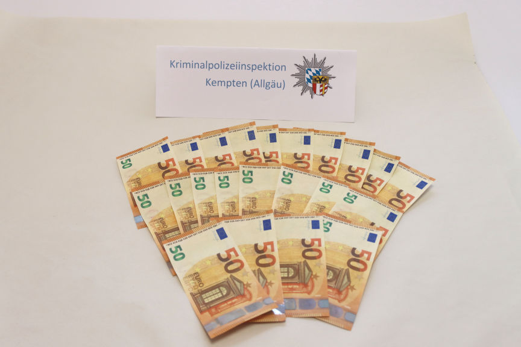
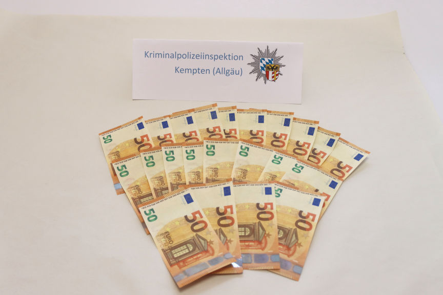

German Man Purchased Counterfeit Euros On the Dark Web
~2 min read | Published on 2023-02-26, tagged Arrested, Counterfeits using 257 words.
Police in Bavaria, Germany, apprehended a 22-year-old man suspected of making purchases from local businesses with counterfeit euro banknotes purchased on the dark web.

According to a press release by the Kempten criminal police, for several weeks, the police had been receiving complaints from local business owners regarding counterfeit 50 euro banknotes.
The retailers had been finding the notes when making cash deposits into their bank accounts. The fake banknotes were reportedly of high quality and bore the same serial number.
The 22-year-old was linked to the fake notes after a cashier at a local business identified a counterfeit banknote when the 22-year-old was trying to make a payment. The cashier held onto the note and asked the suspect to pay with a card.
The cashier later notified the police. An investigation into the 22-year-old's activities was launched after the police uncovered his identity from the card he used to make the purchase. The Kempten public prosecutor's office consequently acquired a search warrant for the man's apartment from the Kempten district court.
The police executed the search warrant on February 22, 2023. The search led to the discovery and seizure of 22 counterfeit 50 euro banknotes.
On being interviewed, the suspect allegedly told the police that he had purchased 40 fake 50 euro notes through the dark web and paid using bitcoin. The 22-year-old also disclosed that he had last spent the notes at a carnival event on February 21.
The 22-year-old was released after being informed that the offense carries a minimum sentence of one year in prison.

Fake euros seized from the suspect
According to a press release by the Kempten criminal police, for several weeks, the police had been receiving complaints from local business owners regarding counterfeit 50 euro banknotes.
The retailers had been finding the notes when making cash deposits into their bank accounts. The fake banknotes were reportedly of high quality and bore the same serial number.
The 22-year-old was linked to the fake notes after a cashier at a local business identified a counterfeit banknote when the 22-year-old was trying to make a payment. The cashier held onto the note and asked the suspect to pay with a card.
The cashier later notified the police. An investigation into the 22-year-old's activities was launched after the police uncovered his identity from the card he used to make the purchase. The Kempten public prosecutor's office consequently acquired a search warrant for the man's apartment from the Kempten district court.
The police executed the search warrant on February 22, 2023. The search led to the discovery and seizure of 22 counterfeit 50 euro banknotes.
On being interviewed, the suspect allegedly told the police that he had purchased 40 fake 50 euro notes through the dark web and paid using bitcoin. The 22-year-old also disclosed that he had last spent the notes at a carnival event on February 21.
The 22-year-old was released after being informed that the offense carries a minimum sentence of one year in prison.